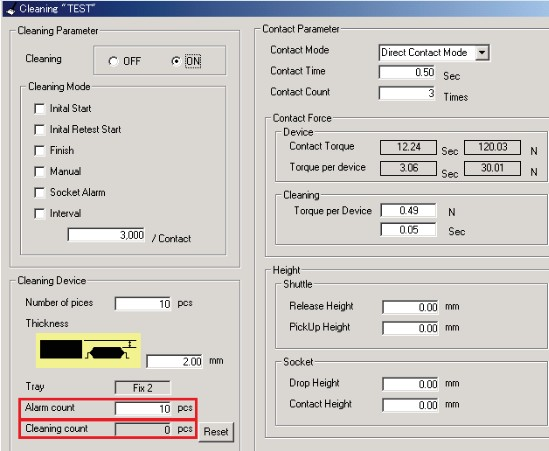

Service History
Subject: NS-8000 series socket cleaning
Handler Model: NS-8000 series
Controller: RC520
Date: 29 Aug 2012
Symptom
Would like to check with you the following function on Socket Cleaning on NS8080 HMI ver 8G11.51-SAS. 
1) Can you kindly confirm with Epson what does it mean by [Alarm Count] and [Cleaning Count]?
To my understanding, [Alarm Count] means there will be an alarm when the socket cleaning has been carried out the number of time which was specified by user and [Cleaning Count] indicate the number of times socket cleaning have been carried out.
According to ASE, when the number of socket cleaning were carried out as what specified at [Alarm Count] no alarm shown, why is that so?
Why the [Alarm Count] and [Cleaning Count] unit were in pcs instead of times?
Example,
[Alarm Count] set at 2 pcs
[Cleaning Count] set at 5 pcs
After 2 times of socket cleaning carried out, no alarm shown. Instead the alarm shown after the 5th socket cleaning.
2) No immediate error shown when there’s socket cleaning device drop at index arm during socket cleaning process. Is that normal?
Action
1)Alarm counts is number of the how many times use the device. – Understood
Cleaning counts is how many times machine did the cleaning. – Understood
So It's should be used "Times". You are right.
Eg)
You put the 10pic of the device on tray.then,
Set number of devices 10pic.
Set alarm counts is 2.
alarm occurred will be after 2 cycle of the cleaning.(Total 20pic of the device.10pic x 2)
- After the 2 cycle of cleaning, no alarm occurred.
2) No immediate meaning is alarm still occurred? What's timing is that?
Eg) [Contact Count] set at 5 Times
- When the cleaning devices drop occurred during the 3rd contact cleaning, there’s no alarm. But the alarm only occurred after the 5th contact cleaning.